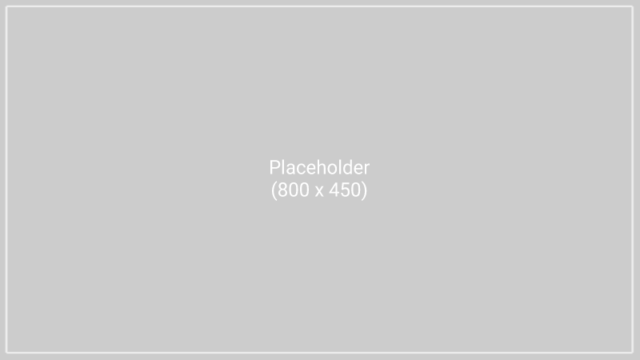

Caption overlay for the image with inverted text, with a link, over a lightened image.
Second image with an additional caption for the image, with a link. Note that the "left" and "right" content blocks are vert-centered. This content block is not, so that the images line up at the top.